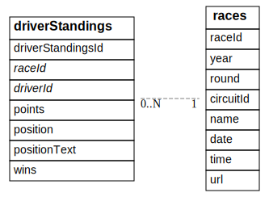

Code In PostgreSQL: You can do lots with just IN, ORDER BY and LIMIT
This series of articles
This is the first of the Code in PostgreSQL series of articles.
Articles in this series
- You can do lots with just IN, ORDER BY and LIMIT
- You can use WITH to name specific parts of SQL
- Combining data from multiple tables with INNER JOIN
- A NoSQL developer might not know about: GROUP BY ( Soon to be published )
- Sub select ( Soon to be published )
- Variables ( Soon to be published )
- Prepare JSON ( Soon to be published )
- Create Function (and testing it) ( Soon to be published )
- Custom Aggregates ( Soon to be published )
The reason why SQL is so important
When developing systems we often have a choice of writing code (NodeJS, C#, Python or PHP etc) or SQL. I believe that sometimes the decision to write code is taken without fully evaluating how much of the task could be offloaded to SQL.
In this series of articles I wish to show the huge benefits of using and learning SQL by examining progressively more difficult scenarios with increasing amounts of SQL knowledge. In doing this I hope to illustrate that sometimes large amounts of extra code is written for what SQL can achieve quicker, with less complexity and more readability.
To be more specific, we should try to follow the rule of least power more often.
About the Ergast data set
For this series of articles we will be using the Ergast data set, which is a provided under the Attribution-NonCommercial-ShareAlike 3.0 Unported Licence.
Setting up the Ergast database within PostgreSQL
To set up the Ergast database within PostgreSQL I did the following:
I allowed psql and friends to work without me having to put in a password all the time by configuring the PostgreSQL environmental variables.
export PGUSER=postgres PGPASSWORD=postgres PGDATABASE=postgres PGHOST=127.0.0.1
Then import the Ergast database. NOTE: At the time of writing I was unable to install the PostgreSQL version.
wget -O /tmp/f1db_ansi.sql.gz http://ergast.com/downloads/f1db_ansi.sql.gz
cat /tmp/f1db_ansi.sql.gz | \
gzip -d | \
sed 's/int(..)/int/' | \
sed 's/ \+AUTO_INCREMENT//' | \
sed "s/\\\'/\'\'/g" | \
sed 's/UNIQUE KEY \"\(\w\+\)\"/UNIQUE /' | \
sed 's/^ *KEY .*(\"\(.*\)\")/CHECK ("\1" > 0)/' | \
sed 's/ date NOT NULL DEFAULT .0000.*,/ date,/'| psql
Assumed level of SQL Knowledge
In this JavaScript example we will assume the writer has sufficient SQL knowledge to use a WHERE statement along with the ability to only return certain fields using SELECT. After this we will see how this can be accomplished in one single SQL statement using IN, ORDER BY and LIMIT.
The aim
Lets say you want to find out the final points for drivers in the 2017 Formula 1 World Championship. The schema for the tables we will be using is as follows:

An example of the data you would find in these tables is shown below:
races
| raceId | year | round | circuitId | name | date | time | url |
|---|---|---|---|---|---|---|---|
| 969 | 2017 | 1 | 1 | Australian Grand Prix | 2017-03-26 | 05:00:00 | https://en.wikipedia.org/wiki/2017_Australian_Grand_Prix |
| 970 | 2017 | 2 | 17 | Chinese Grand Prix | 2017-04-09 | 06:00:00 | https://en.wikipedia.org/wiki/2017_Chinese_Grand_Prix |
| 971 | 2017 | 3 | 3 | Bahrain Grand Prix | 2017-04-16 | 15:00:00 | https://en.wikipedia.org/wiki/2017_Bahrain_Grand_Prix |
| 972 | 2017 | 4 | 71 | Russian Grand Prix | 2017-04-30 | 12:00:00 | https://en.wikipedia.org/wiki/2017_Russian_Grand_Prix |
| 973 | 2017 | 5 | 4 | Spanish Grand Prix | 2017-05-14 | 12:00:00 | https://en.wikipedia.org/wiki/2017_Spanish_Grand_Prix |
driversStandings
| driverStandingsId | raceId | driverId | points | position | positionText | wins |
|---|---|---|---|---|---|---|
| 64782 | 855 | 3 | 63 | 7 | 7 | 0 |
| 64795 | 856 | 1 | 196 | 5 | 5 | 2 |
| 64797 | 856 | 4 | 212 | 3 | 3 | 1 |
| 64805 | 856 | 2 | 34 | 10 | 10 | 0 |
| 64810 | 856 | 3 | 67 | 7 | 7 | 0 |
The driverStandings table has the points for every driver in every race. The problem here is that there is no record in the driverStandings table for which season a raceId belongs to. So we need to get a bit creative... Here is one possible solution:
- Looking at the
racestable'syearcolumn, we can find all theraceIdin 2017. - If we can get all
racesin a givenyearwe should be able to get the last race because theroundwill be the highest within that year. - Find the
pointsanddriverIdfor the drivers who were in thatraceIdby reading thedriverStandingstable. - Sort them by
pointsdescending. - The very first row contains the
driverIdwhich has the most points in that season. ThisdriverIdis the world champion. The ones later on denote their final position (assuming the points differ).
Implementing the JavaScript
Libraries
Main Code
const { takeOne, runQuery, output } = require('./_utils');
const limit = require('./sql-spitting-image/limit');
const select = require('./sql-spitting-image/select');
const orderBy = require('./sql-spitting-image/orderBy');
const orderByMulti = require('./sql-spitting-image/orderByMulti');
/**
* interface RaceResult { round: number; raceId: number; }
* interface MainResult { points: number; driverId: number; year: number; }
*/
/**
* Get data from the `results` table.
*
* @param year number
* @return Promise<RaceResult[]>
*/
function qryRaces(year) {
return runQuery('select "round", "raceId" from races where year = $1', [year]);
}
/**
* Gets all driver standings at a given set of raceIds
*
* @param raceId number
* @return Promise<MainResult[]>
*/
function qryStandings(raceId) {
const sql = `
select
"driverStandings".points,
"driverStandings"."driverId",
2017 as year
from "driverStandings"
where "raceId" = $1
`;
return runQuery(sql, [raceId]);
}
qryRaces(2017)
.then(orderBy('round', 'desc'))
.then(limit(1))
.then((rounds) => rounds.map(r => r.raceId))
.then(takeOne)
.then(qryStandings)
.then(orderByMulti([['points', 'desc'], ['driverId', 'asc']]))
.then(select([
["points", "points"],
["driverId", "driverId"],
["year" , "year"]
]))
.then(output)
.catch(err => {
console.log("ERROR:", err);
process.exit(1);
});
This code, despite there being a lot of it is relatively straight forward. We get a list of raceId and round from the qryRaces function. Once we have this we will order by the round from largest to smallest and take the first one. This is the last race of the season.
After this we feed that raceId directly into the qryStandings functions to get the results from the last race. Finally we are forced to use a more complicated sorting function for stability, because some drivers have the same amount of points before presenting our desired columns.
Pro's
- There's some nice re-usable functions here.
- The main code is quite concise and easy to understand.
Con's
- Longer than SQL
- We downloaded more data than necessary, in this case it is not too bad but it could have been much worse.
SQL
SELECT
"driverStandings".points,
"driverStandings"."driverId",
2017 as year
FROM "driverStandings"
WHERE "raceId" IN (
SELECT "raceId" FROM races
WHERE year = 2017
ORDER BY "round" DESC
LIMIT 1
)
ORDER BY
"driverStandings".points DESC,
"driverStandings"."driverId" ASC
Like the JavaScript we are using ordering (ORDER BY) and limiting (LIMIT) to get the highest raceId within 2017.
The IN clause can be used to match a column against a set of numbers. For example we may choose to write WHERE "raceId" IN (4, 5, 7) which would be the same thing as writing WHERE "raceId" = 4 OR "raceId" = 5 OR "raceId" = 7.
The smart thing here is that we are using a query to get the last raceId within the IN clause instead of a directly specified list of raceId.
Finally an ORDER BY statement is used to perform sorting of the final record set, you can sort by multiple fields or use many types of expressions.
Pro's
- Shorter than the JavaScript.
- If this were called by JavaScript we would need only one Promise, which is much easier to write and reason about.
- The inside of the
INclause can be ran and understood individually.
Con's
- Is the
ORDER BY/LIMIT 1a trick? - It seems in code you can give the contents of IN clause a name (
raceIds) but this is not possible using SQL'sIN, [or is it?]({% post_url 2019-03-12-code-in-postgresql-with %}).
Results
| points | driverId | year |
|---|---|---|
| 363 | 1 | 2017 |
| 317 | 20 | 2017 |
| 305 | 822 | 2017 |
| 205 | 8 | 2017 |
| 200 | 817 | 2017 |
| 168 | 830 | 2017 |
| 100 | 815 | 2017 |
| 87 | 839 | 2017 |
| 54 | 832 | 2017 |
| 43 | 13 | 2017 |
| 43 | 807 | 2017 |
| 40 | 840 | 2017 |
| 28 | 154 | 2017 |
| 19 | 825 | 2017 |
| 17 | 4 | 2017 |
| 13 | 838 | 2017 |
| 8 | 835 | 2017 |
| 5 | 826 | 2017 |
| 5 | 836 | 2017 |
| 0 | 18 | 2017 |
| 0 | 814 | 2017 |
| 0 | 828 | 2017 |
| 0 | 841 | 2017 |
| 0 | 842 | 2017 |
| 0 | 843 | 2017 |
Tags: code-in-postgresql, javascript, postgresql, postgresql